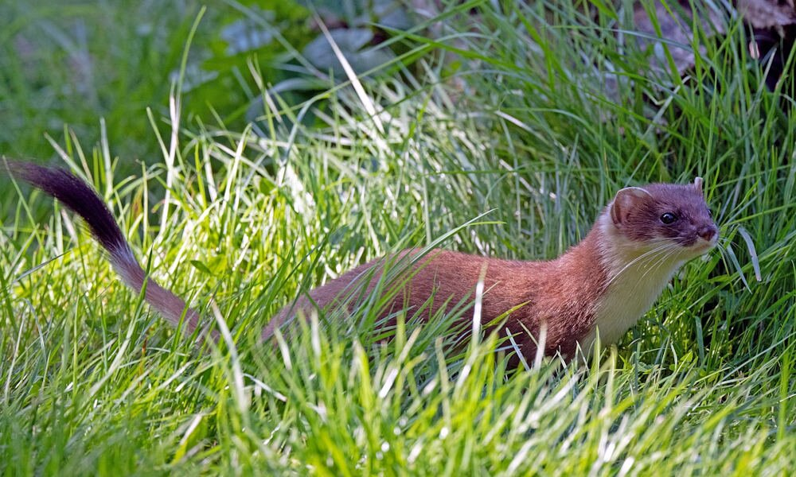
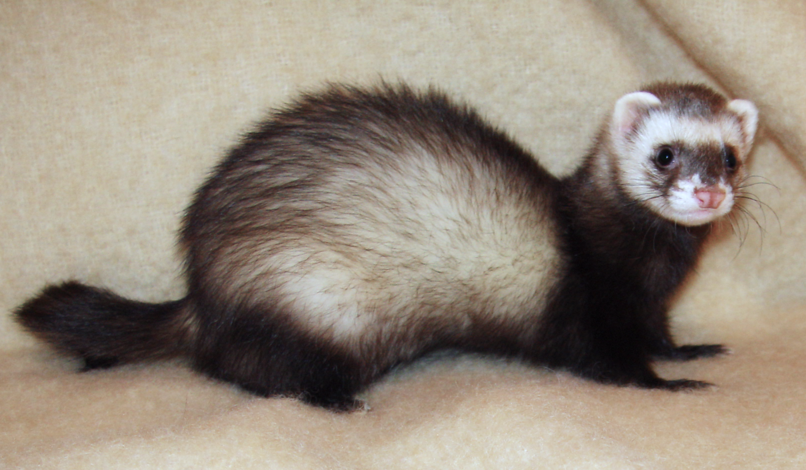
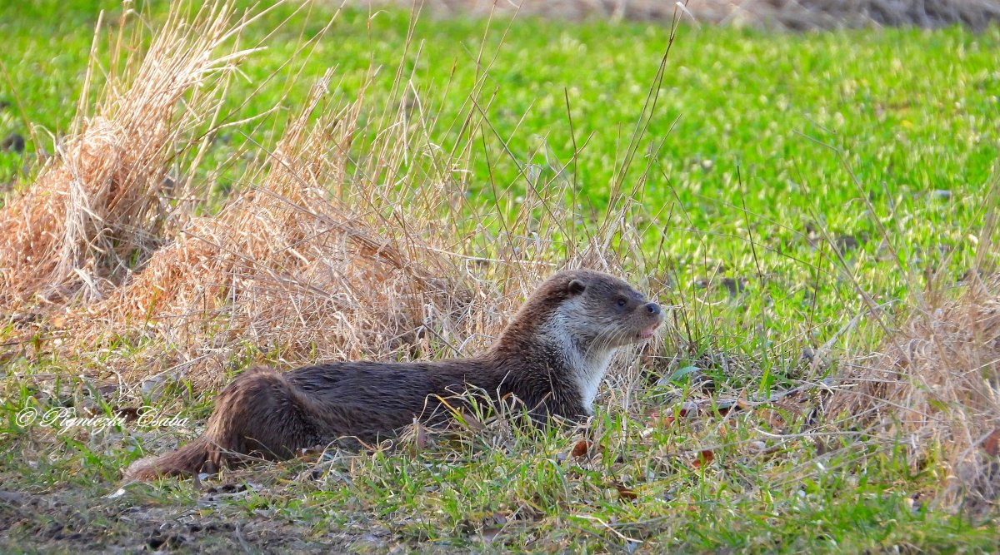
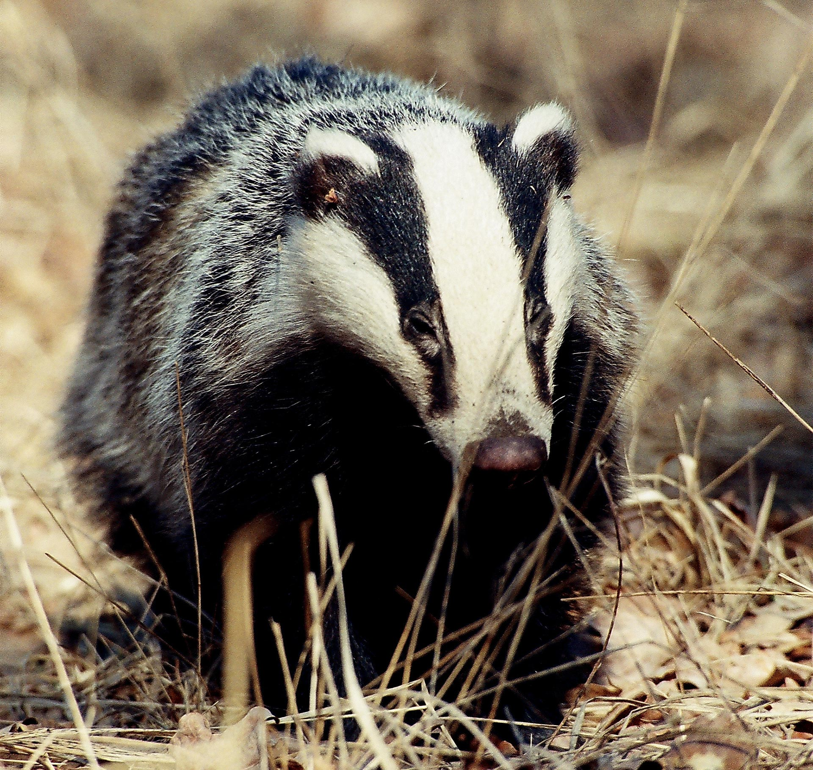
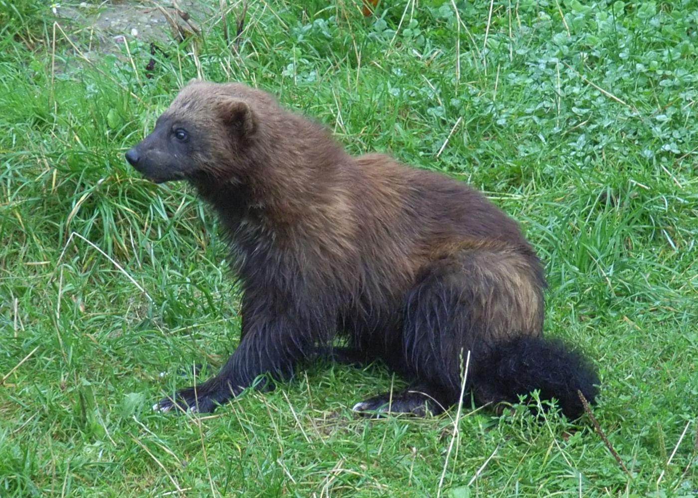

Köszöntelek a Menyétfélék és Különleges Vízi Élőlények világában! Ezen a weboldalon számos érdekes állatot ismerhetsz meg részletes leírásokkal és képekkel.
Kattints az alábbi gombra az oldal megtekintéséhez!
Bemutatjuk a menyétfélék családjának néhány érdekes tagját.

A menyét a menyétfélék családjának egyik legismertebb és egyben legkisebb tagja. Teste hosszú és karcsú, lábai rövidek, ami lehetővé teszi számára, hogy könnyedén mozogjon a bokrok között és a föld alatti járatokban. Bundája általában barna színű, hasa világosabb. Egyes északi területeken télen fehér bundát növeszt, amely segíti a rejtőzködésben.
A menyét rendkívül ügyes és gyors vadász. Fő táplálékát egerek, pockok és más kisebb rágcsálók alkotják, de alkalmanként madarakat, tojásokat, gyíkokat és rovarokat is elfogyaszt. Nagyon bátor állat, és gyakran nála nagyobb zsákmányt is képes elejteni. A gazdák számára hasznos lehet, mivel sok olyan rágcsálót pusztít el, amelyek károkat okoznának a termésben.
Magyarországon is megtalálható erdőkben, mezőkön és mezőgazdasági területeken. Többnyire magányosan él, és territóriumát más menyétekkel szemben védi.

A görény közepes méretű ragadozó emlős, amely a menyétfélék családjába tartozik. Hosszú teste, rövid lábai és sötét színű bundája miatt könnyen felismerhető. Szaglása rendkívül fejlett, ami nagy segítséget nyújt számára a vadászat során.
Főként kisebb emlősöket, békákat, madarakat és tojásokat fogyaszt. Éjszakai életmódot folytat, ezért nappal ritkán lehet látni. Vadászat közben csendesen közelíti meg zsákmányát, majd gyors támadással ejti el azt.
A házi görény a vadon élő görény rokona, amelyet az emberek már évszázadok óta tartanak. Játékos, intelligens állat, ezért sokan házi kedvencként is kedvelik. A vadon élő görény azonban jóval önállóbb és óvatosabb az emberrel szemben.

A vidra a menyétfélék családjának egyik legjobban úszó tagja. Folyók, tavak és mocsarak közelében él. Teste áramvonalas, lábujjai között úszóhártya található, így gyorsan és ügyesen mozog a vízben.
Táplálékának legnagyobb részét a halak alkotják, de békákat, rákokat és más vízi élőlényeket is elfogyaszt. Rendkívül ügyes vadász, akár több percig is képes a víz alatt maradni, miközben zsákmányát üldözi.
A vidrát sokan játékos természetéről ismerik. Gyakran figyelhető meg, ahogy csúszkál a sáros vagy havas partokon. Magyarországon védett fajnak számít, ezért különösen fontos az élőhelyeinek megőrzése.

A borz zömök testű, erős emlős, amely fekete-fehér csíkos fejéről könnyen felismerhető. Elsősorban erdős és bokros területeken él. Hatalmas föld alatti járatrendszereket ás, amelyeket kotoréknak nevezünk.
Mindenevő állat. Fogyaszt rovarokat, gilisztákat, kisebb emlősöket, gyümölcsöket, magvakat és növényi részeket is. Táplálkozása nagyban függ az évszakoktól és az adott területen található élelem mennyiségétől.
A borz többnyire éjszaka aktív. Nappal a kotorékában pihen, amelyet akár több generáción keresztül is használhat a család. Nagyon tiszta állat, rendszeresen karbantartja és tisztítja lakóhelyét.

A rozsomák a menyétfélék egyik legerősebb és legkitartóbb tagja. Elsősorban az északi félteke hideg vidékein él, például Kanadában, Alaszkában és Skandináviában. Vastag bundája jól védi a kemény téli időjárástól.
Ragadozó és dögevő egyaránt. Kisebb emlősöket, madarakat és halakat fogyaszt, de gyakran nagyobb ragadozók által elejtett állatok maradványait is megeszi. Híres arról, hogy rendkívül bátor, és sokszor nála jóval nagyobb állatokkal is szembeszáll.
A rozsomák nagy területeket jár be táplálék után kutatva. Erős állkapcsa és izmos teste miatt az északi erdők egyik legfélelmetesebb ragadozójának számít. Bár külseje zömök, meglepően gyorsan tud mozogni a hóban és a hegyvidéki környezetben.